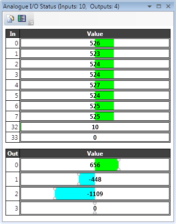
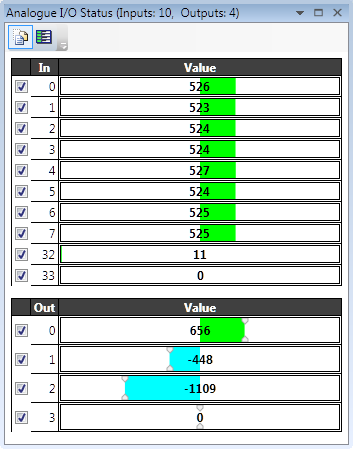
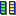
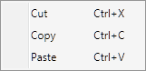

The analogue I/O viewer is used to show the values measured on the analogue inputs, and set on the analogue outputs of the controller (both local and remote).

The tool normally displays the inputs and outputs selected by the user. This defaults to showing all inputs and outputs until the user has selected which inputs to show. The value shown for each line is the raw value decoded by the hardware. Output values may be adjusted using the slider controls.
Clicking on the "Show All Lines" button in the toolbar toggles the display between the normal (filtered) display and the "All I/O" display.

In "All Lines" display mode there is a check box for each line to determine which lines are displayed in normal mode. When in normal mode only the lines which are checked will be displayed.
It is also possible to add a description to each analogue I/O line. The description display can be toggled on/off using the show/hide descriptions button or  .
Right clicking on a description will bring up a context menu allowing to user to perform cut and paste operations.
